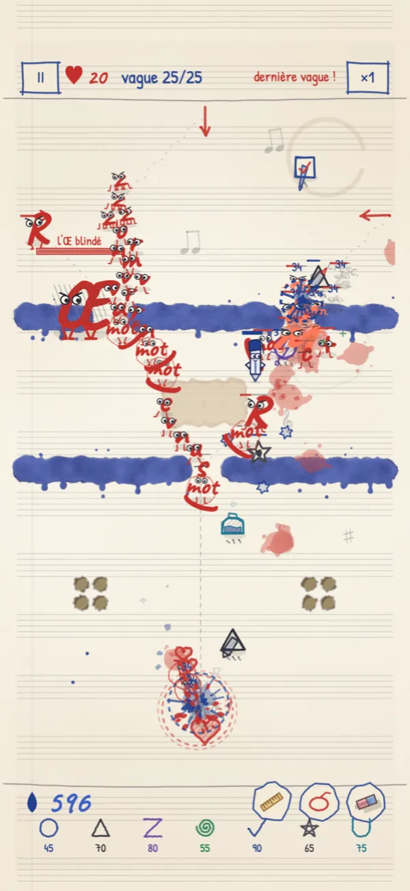
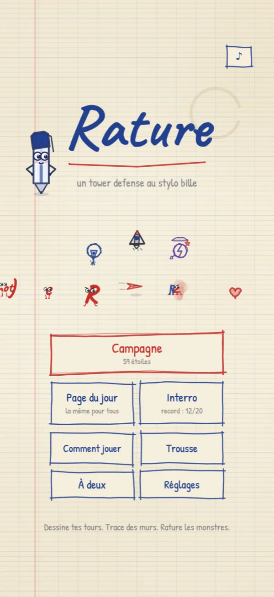
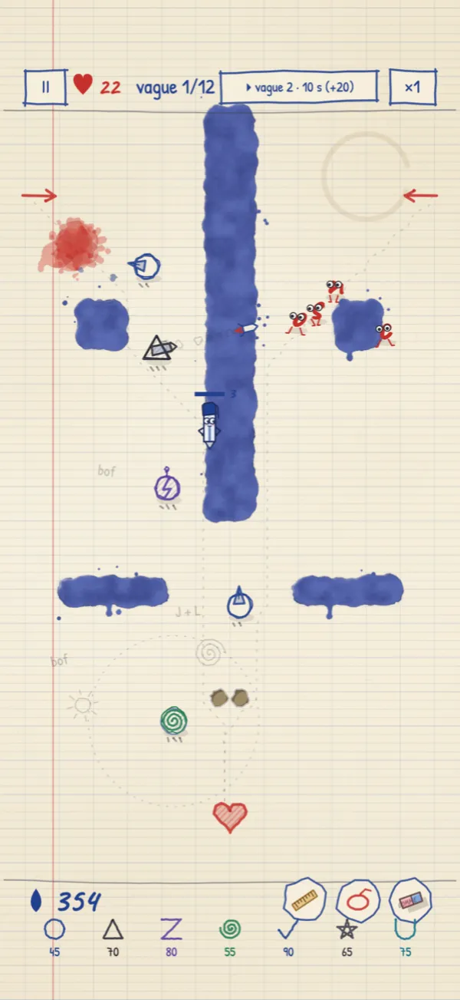
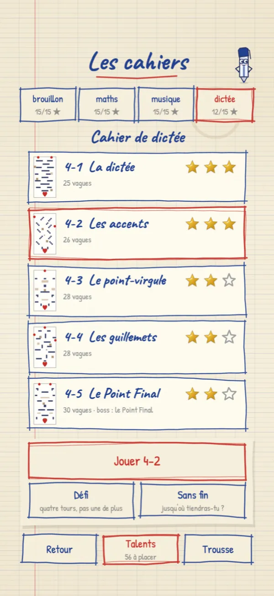
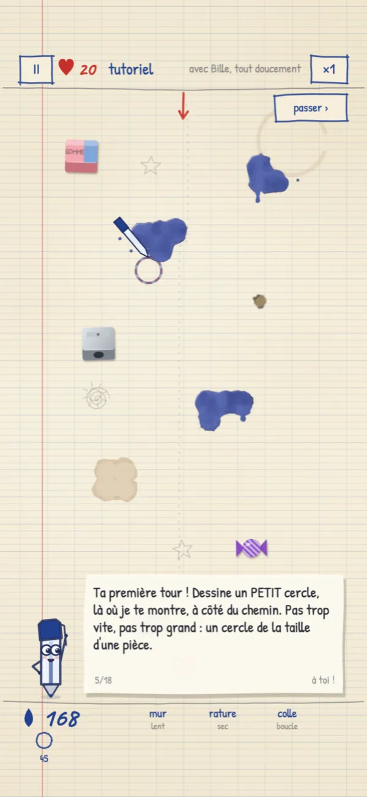

Rature
un tower defense au stylo bille
Les marges de ton cahier sont envahies. Ton arme ? Ton stylo bille.
Des lettres, des fautes, des avions de dictée et des points d’exclamation marchent droit sur ton Cœur. Dessine tes tours, trace des murs, et rature tout ce qui dépasse.
- Gratuit
- Sans pub
- Sans achat
- Hors ligne
✎ Essaie, là, tout de suite
Défends cette page
- Un petit rond à côté du chemin : c’est une tour. Elle garde la forme de ton dessin et tire toute seule.
- Un grand trait sur les lettres : tu les ratures.
- Tout coûte de l’encre. Elle revient toute seule, et chaque lettre raturée en rapporte.
Une version de poche avec une seule tour. Le vrai jeu en a sept, plus les murs, la colle, 20 pages et quatre boss.
✎ Tout se dessine
Pas de menu de construction : ton stylo suffit
✎ Sept tours
Chaque symbole a sa tour, et chaque tour deux spécialisations
Trois niveaux, puis un choix au niveau 4 : la Plume devient mitrailleuse ou perforante, la Foudre orage ou surtension… Et la Trousse te laisse redessiner tes tours à ta main.
- ○Plumetir rapide, une cible
- △Roquettesexplosion de zone
- ZFoudresaute de monstre en monstre
- ✓Correctionportée infinie, voit les furtifs
- @Spiraleaura qui ralentit
- ☆Scielames autour d’elle
- UEncrierproduit de l’encre
✎ Ce qui t’attend
Quatre cahiers à défendre
- 4 cahiers, 20 pages faites main : brouillon, maths, musique et dictée, chacun avec son papier.
- 15 monstres-lettres : des z nerveux qui zigzaguent, des furtifs que seule la Correction voit…
- Des défis par page, un mode sans fin, la page du jour (la même pour tout le monde) et l’interro surprise.
- Des talents à placer avec tes étoiles.
- À deux : chacun sur son téléphone, une seule encre pour deux stylos.
- Bille, la mascotte, t’explique tout dans un tutoriel tout doux… et te glisse des conseils (tu peux la faire taire).
- Game Center : classements et succès. Sauvegarde iCloud.
Et quatre boss
- le Mot-Serpent
- l’Esperluette
- l’Œ blindé
- le Point Final

✎ En images
Cinq pages du jeu




Prends un stylo
Pas une seule image dans le jeu : tout est tracé à l’encre, comme dans les marges de tes cahiers d’école.
Bientôt sur l’App Store, sur iPhone et iPad. En attendant, il se joue en entier dans le navigateur.